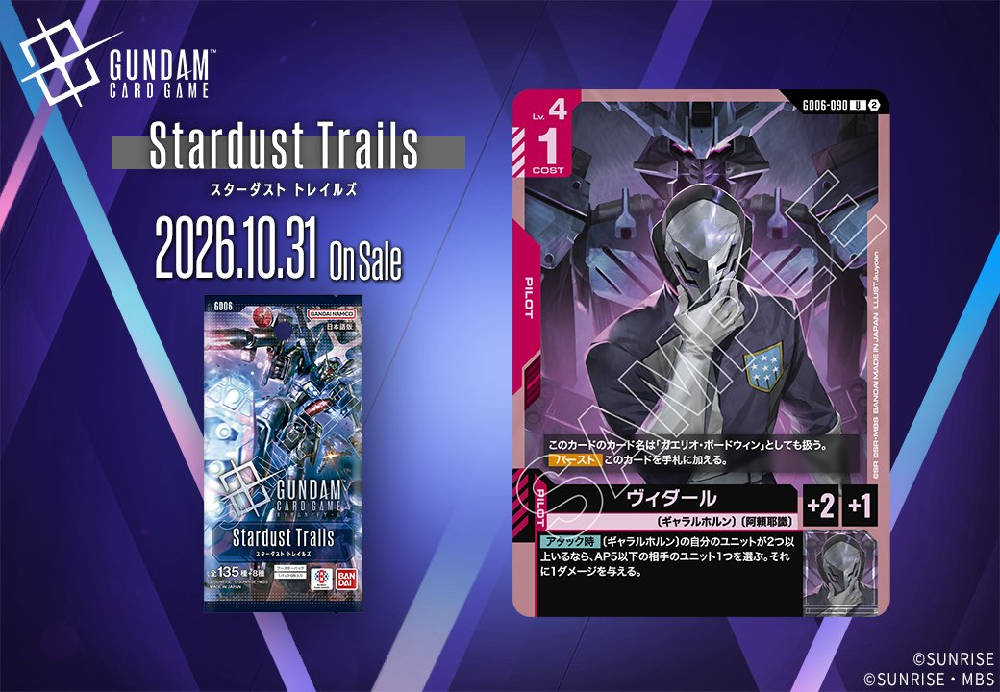
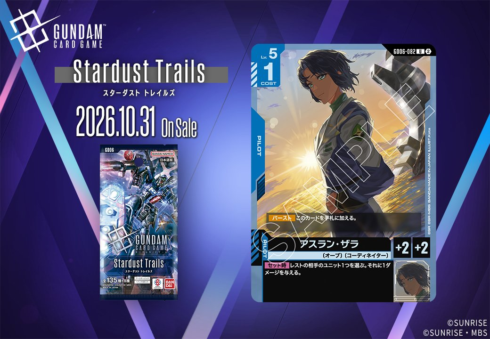
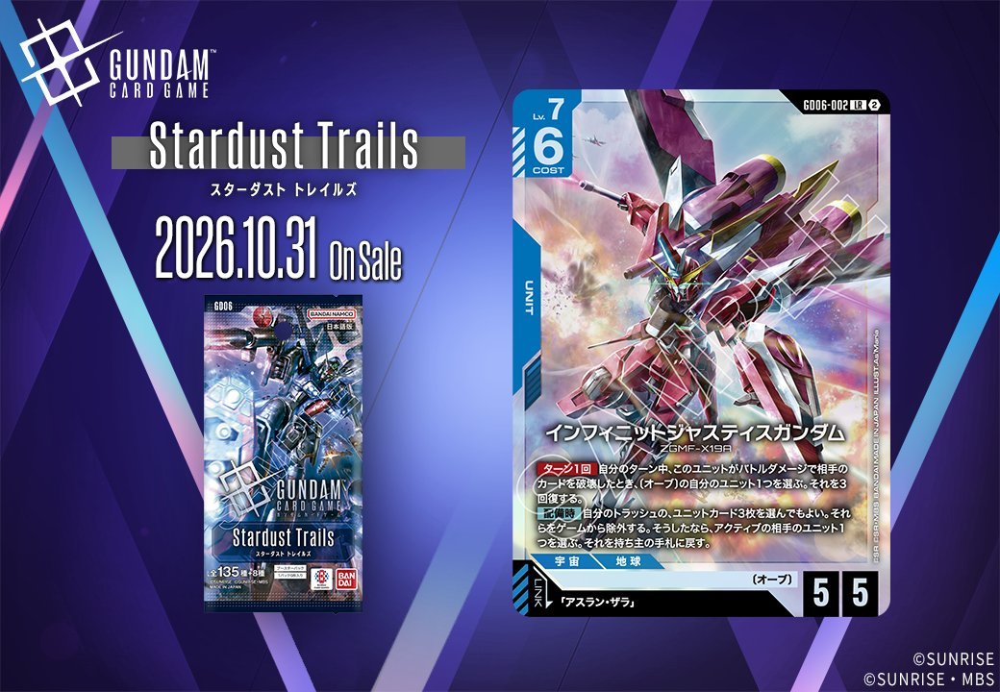
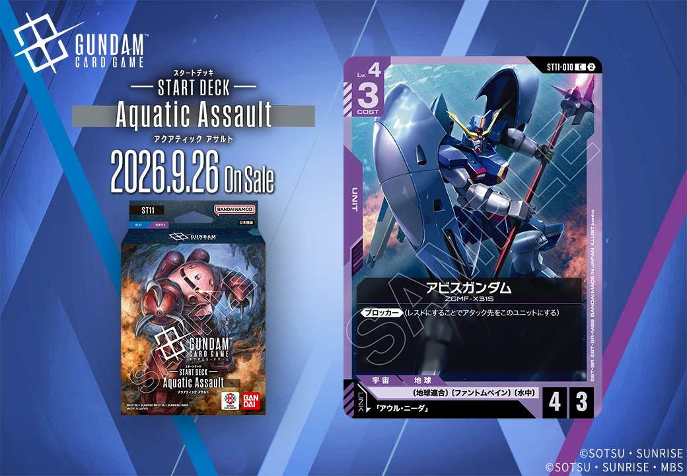

今回は拡張パック「Stardust Trails」および「GD06」「ST11」から計5枚のカードを取り上げます。中でも同日公開のUNIT「インフィニットジャスティスガンダム」(GD06-002)とPILOT「アスラン・ザラ」(GD06-082)は、UNIT側のリンク条件「アスラン・ザラ」が成立する組合せとなっており、両者を揃えて運用できる点が特徴です。いずれも発売日は2026-10-31で、リンクを軸としたカードが複数収録されています。

ヴィダール (GD06-090)
| 色 | 赤 | タイプ | PILOT |
| Lv | 4 | コスト | 1 |
| 補正 AP | 2 | 補正 HP | 1 |
| 特徴 | 〔ギャラルホルン〕、〔阿頼耶識〕 | ||
| リンク条件 | 「ガエリオ・ボードウィン」 | ||
効果: このカードのカード名は「ガエリオ・ボードウィン」としても扱う。【バースト】このカードを手札に加える。【アタック時】〔ギャラルホルン〕の自分のユニットが2つ以上いるなら、AP5以下の相手のユニット1つを選ぶ。それに1ダメージを与える。
ヴィダール (GD06-090) はコスト1・AP2/HP1の赤のパイロットで、カード名を「ガエリオ・ボードウィン」として扱うため、リンク先「ガエリオ・ボードウィン」との運用に加え、ガエリオ名称を参照するカードにも噛み合う一枚です。【アタック時】は〔ギャラルホルン〕の自分のユニットが2つ以上いる前提で相手のAP5以下のユニット1つに1ダメージを与えるため、〔ギャラルホルン〕を並べる構成での運用が条件となります。【バースト】でこのカードを手札に加えられるため、シールド割れ時に手札へ戻して再セットを狙える点も評価でき、2026-10-31発売のカードです。

ガンダム・ヴィダール (GD06-036)
| 色 | 赤 | タイプ | UNIT |
| Lv | 4 | コスト | 2 |
| AP | 3 | HP | 4 |
| 特徴 | 〔ギャラルホルン〕、〔ガンダム・フレーム〕 | ||
| リンク条件 | 「ガエリオ・ボードウィン」 | ||
効果: 【リンク時】相手のユニット1つを選ぶ。それに1ダメージを与える。
ガンダム・ヴィダール（GD06-036）はLv.4/COST2でAP3/HP4と赤のミッドレンジ域で扱いやすいユニット。「ガエリオ・ボードウィン」とのリンク成立で【リンク時】相手のユニット1つに1ダメージを与えられ、配備直後に相手の低HPユニットや残りHP1の相手を処理できる。 ダメージ量は1と控えめなため、単体での除去力は「格闘戦」（2ダメージ）や「戦技の向上」（3ダメージ）といった赤のダメージ系コマンドと組み合わせて削り切る運用が現実的。2026-10-31発売で、これらの環境上位コマンドとの共存が試される1枚となりそう。


アスラン・ザラ (GD06-082)
| 色 | 青 | タイプ | PILOT |
| Lv | 5 | コスト | 1 |
| 補正 AP | 2 | 補正 HP | 2 |
効果: 【バースト】このカードを手札に加える。【セット時】レストの相手のユニット1つを選ぶ。それに1ダメージを与える。
COST1でAP2/HP2のパイロット「アスラン・ザラ」は、【セット時】でレストの相手ユニット1つに1ダメージを与える点が特徴。低コストながら搭載即座に軽い除去や削りを行える。 【バースト】でこのカードを手札に加えられるため、シールドから捲れても再利用しやすい。 同日公開の「インフィニットジャスティスガンダム」(GD06-002)とはリンク条件が成立し、青のユニット上での併用が可能。ただし【配備時】と【セット時】は別タイミングのトリガーで同時発動ではないため、それぞれのタイミングで独立して機能する点に注意。2026-10-31発売。

インフィニットジャスティスガンダム (GD06-002)
| 色 | 青 | タイプ | UNIT |
| Lv | 7 | コスト | 6 |
| AP | 5 | HP | 5 |
| 特徴 | 〔オーブ〕 | ||
| リンク条件 | 「アスラン・ザラ」 | ||
効果: ターン1回 自分のターン中、このユニットがバトルダメージで相手のカードを破壊したとき、〔オーブ〕の自分のユニット1つを選ぶ。それを3回復する。【配備時】自分のトラッシュの、ユニットカード3枚を選んでもよい。それらをゲームから除外する。そうしたなら、アクティブの相手のユニット1つを選ぶ。それを持ち主の手札に戻す。
インフィニットジャスティスガンダム(GD06-002、Stardust Trails収録、2026-10-31発売)は、COST6でAP5/HP5の〔オーブ〕青ユニット。バトルダメージで相手のカードを破壊した際に〔オーブ〕ユニット1つを3回復でき、【配備時】にはトラッシュのユニットカード3枚を除外することでアクティブの相手ユニット1つを手札に戻せる、盤面干渉と回復を兼ねた性能を持つ。 【配備時】の手札バウンスは相手のブロッカーやアタッカーを一時的に排除でき、トラッシュにユニットカードが3枚溜まる中盤以降に真価を発揮する点に留意したい。リンク相手「アスラン・ザラ」(GD06-082)は同一ユニット上で運用でき、【セット時】でレストの相手ユニットに1ダメージを与えられるが、これは【配備時】とは別トリガーのため同時解決ではなく、あくまで別々のタイミングで機能する点は正確に区別しておきたい。



アビスガンダム (ST11-010)
| 色 | 紫 | タイプ | UNIT |
| Lv | 4 | コスト | 3 |
| AP | 4 | HP | 3 |
| 特徴 | 〔地球連合〕、〔ファントムペイン〕、〔水中〕 | ||
| リンク条件 | 「アウル・ニーダ」 | ||
効果: 《ブロッカー》(レストにすることでアタック先をこのユニットにする)
アビスガンダム(ST11-010)は、COST3でAP4/HP3、キーワード効果《ブロッカー》のみを持つシンプルな防御ユニットです。レストにすることでアタック先を自身に変える身代わり性能が主軸で、COST3としてはAP4の攻撃力も確保しています。 リンク先は「アウル・ニーダ」で、同パイロットを搭載できれば〔ファントムペイン〕〔水中〕を持つ紫のユニットとして運用しやすくなります。2026-09-26発売のST11収録カードです。

関連カード
-
 格闘戦(ST03-013)赤系デッキ内採用率22.8% (1007デッキ)
格闘戦(ST03-013)赤系デッキ内採用率22.8% (1007デッキ) -
 GQuuuuuuX（オメガ・サイコミュ起動時）(GD03-034)赤系デッキ内採用率17.6% (778デッキ)
GQuuuuuuX（オメガ・サイコミュ起動時）(GD03-034)赤系デッキ内採用率17.6% (778デッキ) -
 資源衛星パラオ(GD01-128)赤系デッキ内採用率14.3% (631デッキ)
資源衛星パラオ(GD01-128)赤系デッキ内採用率14.3% (631デッキ) -
 戦技の向上(GD03-109)赤系デッキ内採用率13.5% (595デッキ)
戦技の向上(GD03-109)赤系デッキ内採用率13.5% (595デッキ) -
 GFreD(GD03-035)赤系デッキ内採用率11.5% (507デッキ)
GFreD(GD03-035)赤系デッキ内採用率11.5% (507デッキ) -
ガエリオ・ボードウィン(GD02-099)白系デッキ内採用率0% (0デッキ)
-
ヴィダール(GD06-090)NEW赤系 — 同色・共通特徴: ギャラルホルン（新カード）
-
 アムロ・レイ(ST01-010)青系デッキ内採用率54.8% (2419デッキ)
アムロ・レイ(ST01-010)青系デッキ内採用率54.8% (2419デッキ) -
 ガンダム(ST01-001)青系デッキ内採用率53.5% (2360デッキ)
ガンダム(ST01-001)青系デッキ内採用率53.5% (2360デッキ) -
 覚悟の表れ(GD01-100)青系デッキ内採用率51.5% (2271デッキ)
覚悟の表れ(GD01-100)青系デッキ内採用率51.5% (2271デッキ)